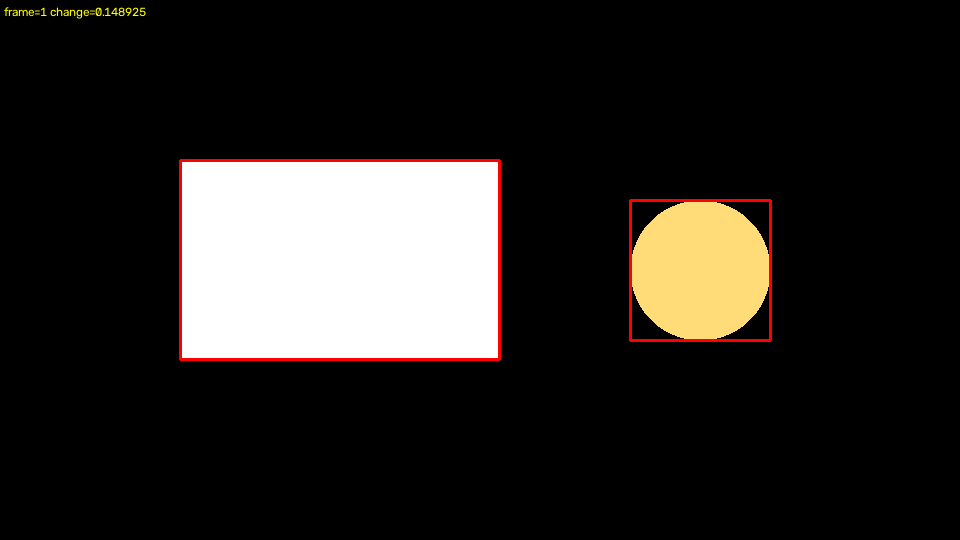

OpenCV 5 · bounded agentic vision
Evidence Locker
Deterministic visual-change evidence controls what the agent may do next. Every decision remains inspectable, hash-addressed, and bounded by human review.
Source: deterministic synthetic transition
OpenCV 5.0.02 frames1 evidence card(s)sealed receipt
seal_evidence_for_agent_summary
OpenCV found localized changes that are reviewable without an immediate escalation.
Triggering frames: (1,)
Bounded explanation
OpenCV produced 1 evidence card(s) with 2 review region(s); maximum normalized change was 0.148925.
Cited frames: (1,)
explanation bccb8f29ef3562bcff62bdbddf96912ac0d84ed75645bc8cd77ed3b8db506ffc
Frame 1
Timestamp: 100 ms · Change: 0.148925 · Regions: 2

previous 52f9523071641f22f7a5c99a2a7500dcec1465c3169108e57dab839a574e7b78current 4d223d75cbaba177dd74e163395bb5f13e2672922df4f07ac9cc6d20b92420e3
Report receipt · 7cdecc659b849dcd5940d92aae3095d81e3c101c87d5ff3b8e4651ad485b54b1
Download the canonical evidence JSON · Source, tests, architecture, and technical report